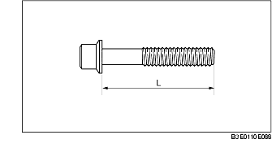

Bolt inspection
1. Measure the length of each bolt.

- Standard cylinder head bolt length• •
- 128.9-129.5 mm {5.075 -5.098 in}
- Maximum cylinder head bolt length
- 130.2 mm {5.125 in}
- Standard connecting rod bolt length
- ZJ: 36.2-36.6 mm {1.426 -1.440 in}
- ZY, Z6: 46.7-47.3 mm {1.839 -1.862 in}
- Maximum connecting rod bolt length
- ZJ: 36.95 mm {1.454 in}
- ZY, Z6: 48.0 mm {1.889 in}